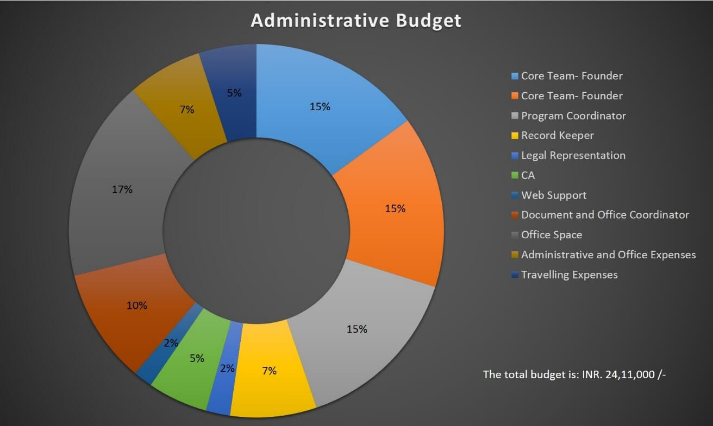

Administrative Funds
An organization, in order to perform efficiently and justify its purpose, demands sincerity and dedication from the people who are a part and crux of the organization. At the same time an organization also requires funds for the administrative functions ranging from office expenses, employee salaries to audit and record maintenance etc.
In first year after coming into existence, ROMF raised 20,00,000/- to set up our operations and execute our very first campaign - #DriveForChange through the year 2016-17.
During the year 2017-18, we raised 12,00,000/- towards our administrative requirements.
For the year 2018-19 we are trying to raise 24,11,000/- in order to expand our operations, team and set up an office space in Bangalore.
Our current team includes:
- • 1) Core Team: Piyush & Akshatha. We research, document and initiate social awareness campaigns and development projects. We are also responsible for pushing and guiding the organization towards achieving its vision and goals.
- • 2) Documentary Director- Visual Content: Mrudhula Sridharan is heading our documentary videos division and is responsible for conceptualizing
- • 3) Program Co-ordinator: Ravi Kiran (previously South India Head of Marketing for JA Solar). His work includes designing working models for various development projects apart from personally overseeing the implementation of these projects with us.
- • 4) Chartered Accountant: CA to maintain all our books. We are working with R&A Associates.
- • 5) Web Support: We are working with Shesh N Iyer to maintain our website and online presence.
To scale-up our operations in order to execute the projects taken up efficiently we have decided to add the below personnel into the organization:
- • 1) Legal Representation: We have been working with lawyers on case to case basis. But we need to have a dedicated legal representative to take care of legalities involved with various projects, campaigns etc.
- • 2) Document and Office Coordinator: This role is to coordinate between the various partners of our organization for documents required and other such accounts and legal coordination.
- • 3) Social Media Management: We need a team of minimum 2 individuals who are dedicated to managing our content and presence on various social media platforms.
- • 3) Office Space: We are in an urgent need of establishing a Head Quarter office space in Bangalore along with branch offices in our key project regions of Assam, Bastar and Odisha.
For the year of 2018-19 we have already secured INR. 6,00,000/-. This campaign is to plug in the gap and raise 18,11,000/-.
Your contributions, however big or small, allow us to continue doing what we do. If you like our work, please contribute what you can.
Administrative BUdget
Your contributions, however big or small, allow us to continue doing what we do. If you like our work, please contribute what you can.
Education (Vardhana):
To empower as many bright, dedicated and underprivileged children to complete their education, at any stage of their academic career (from school to post graduation) as possible. Allowing them to realize their true potential unaffected by their personal financial situation at any step of their journey.
- • 1. In the first year of Vardhana (2017-18), we sponsored the education of 200 kids from various regions.
- • 2. For the year 2018-19 we are working towards sponsoring the education of 400 kids. We have already sponsored 280 children for the year.
Healthcare
To provide medical diagnostic and healthcare services through medical camps and healthcare infrastructure in remote and disconnected rural and tribal regions to improve health conditions, prevent spread of epidemics, reduce mortality rate, collect data and spread awareness about hygiene and healthy practices.
- • 1. Rural Healthcare Project: Bastar, Chattisgarh- In Bastar, Chattisgarh we are working with Mr. Ramchandra and Suneeta Godbole to bring standard healthcare/diagnostic facilities to remote, ignored tribal villages in Dantewada district of Bastar through medical camps. We have brought in a team consisting of two visiting doctors, a program coordinator, a laboratory technician, and two field assistants and have been conducting 2 camps every month since July 2017.
- • 2. Rural Healthcare Project: Bonda Hills, Odisha- Our goal is to provide a vehicle and with our local partner, Asha Kiran society, conduct medical camps every month across Bonda villages to give local access to quality health care and diagnosis facilities at the village level and spread awareness about healthy practices.
Energy Solutions
To provide green sustainable energy solution to the rural and tribal communities residing in remote areas with no access to government electricity supply. To improve their lives from the perspectives of health, education and security.
- • 1. Solar Power to Malasar Tribe, Nelliyampathy, Kerala: We have tailored a proposal for providing access to light as well as running low wattage devices that will help the displaced, landless Malasar tribe with their day to day activities after dark, keep them safe from wild animals.
- • 3. Biogas to Bonda Tribe, Bonda Hills, Odisha: To introduce and familiarize the Bonda tribe to gobar gas as a better, healthier, eco-friendly alternative to traditional wood burning for cooking purposes. We are currently introducing the tribe to a prototype.
Infrastructure
To identify and bridge the gaps in existing public infrastructure in rural and tribal areas with a vision of improving the lives of communities residing in remote and neglected areas.
- • 1. Water Access Project, Swaroop Nagar, West Bengal: Together with our local partner, Bithari Disha, we have started a drinking water purification and supply project after 2 phases of funding. Through this initiative we are supplying 16,000 lts of clean and safe drinking water to the arsenic contaminated region every day.
- • 2. Community Bus, Dhanushkodi, Tamil Nadu: With donations from KARA Foundation, we donated a minibus to the fishing community residing in Dhanushkodi, TN. The Bus is already being used by the locals for collective purposes.
Agricultural & Farmer Support
Our agricultural projects are aimed at using resources, ideas to enable farmers to organize into co-operatives/FPOs so that they can practice organic farming in a sustainable, eco-friendly and profitable manner.
- • 1. Kharthong Organic Farmers Producer Company, Dima Hasao, Assam: We have formed a Farmers Producers Company in order to provide organization, bargaining power as well as training and information from experts in the field of organic farming to the farmers with an aim of making the community self sustainable and capable of earning fair price for their organic produce. The company is in operation and selling produce directly to cities.
- • 2. Avartansheen Kheti & Farmer Liberation, Bundelkhand, Uttar Pradesh: Avartansheel Kheti model tackles some of the key issues like deforestation, stray cattle, farmer suicides, depleting ground water in a holistic manner. Enabling and guiding farmers to carefully transition back to a sustainable/profitable/eco-friendly way of farming will pull farmers out of perpetual poverty and loss and reduce farmer suicides while restoring the long lost ecological balance.